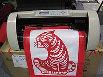
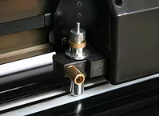
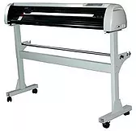
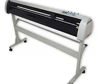
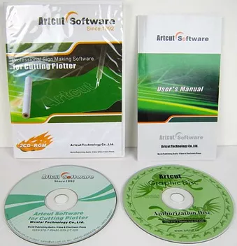

- 
Jinka JK365
14 500 р.под заказ - 
Jinka JK721
27 500 р.в наличии - 
Jinka JK1101
34 000 р.в пути 
Jinka JK1351
36 500 р.в наличии- 
Jinka JK1660
48 000 р.в наличии
Режущие плоттеры вошли в нашу жизнь сравнительно не давно, но пользуются обширным спросом. Весь модельный ряд плоттеров имеют обширный диапазон ширины рабочей поверхности от 630 мм до 1250 мм и давлением ножа на материал от 400 – 800 гр. Они способны порезать самоклеющуюся пленку разных моделей: Оракал 641, 642, плёнка для пескоструйной работы Oramask 831, самоклеющая плёнка для тонировки, карбоновая плёнка, также существует возможность резки тонкого магнитного винила и многое другое.
Режущие плоттеры нашли свое применение в различных сферах деятельности. Их стали широко использовать в сфере похоронного бизнеса. Для изготовления надписи на граните, художнику приходилось тратить много времени на разметку, написание… благодаря плоттеру время на изготовление шаблонов под пескоструйную работу уменьшилось в разы. Т. к. даже с минимальным давлением ножа на материал наши плоттеры способны прорезать самую толстую пленку, которая используется для пескоструйной работы.
В швейном производстве плоттеры тоже не заменимы т.к. раньше для изготовления лекал для выкроек приходилось вырисовывать каждую деталь отдельно. Сейчас все детали можно подготовить в любой векторной программе и с помощью плоттера перенести изображение на бумагу, потому что наши плоттеры путем замены ножа на стержень ручки могут рисовать. Достаточно жесткая конструкция корпуса режущего плоттера изготовлена из алюминия. Такая конструкция в совокупности с подставкой (стойкой) позволяют достичь наиболее надежного и весьма качественного выполнения работы.
Режущая головка оборудования передвигается по круглой направляющей, которая изготовлена из стали. Она предоставляет возможность осуществления наиболее качественной работы плоттера при выполнении резки любых видов виниловой пленки. В число пленок, которые могут быть обработаны при помощи плоттера, входят: ПВХ, металлизированные, световозвращающие плёнки и другие.
До того, как появились режущие плоттеры (другое название каттеры), оформление витрин, стеллажей осуществлялось с помощью красок и кисти. С появлением самоклеющейся пленки узоры и аппликации рисовались и вырезались вручную, и на подготовку уходило много времени, и результат не оправдывал свое ожидание. Благодаря режущим плоттерам появилась возможность быстрого выполнения поставленной задачи, т.к. подготовка файла и вырезание его на режущем плоттере требует незначительного времени. Файл для каттера подготавливается и рисуется в любой векторной программе Corel Draw, Auto Cad, а затем импортируется в программу ArtCut, которая специально предназначена для режущего плоттера и идет в комплекте с ним.
Режущие плоттеры Rabbit могут работать с большим спектром материалов начиная от тонкой самоклеящейся пленки и заканчивая тонким магнитным винилом.
